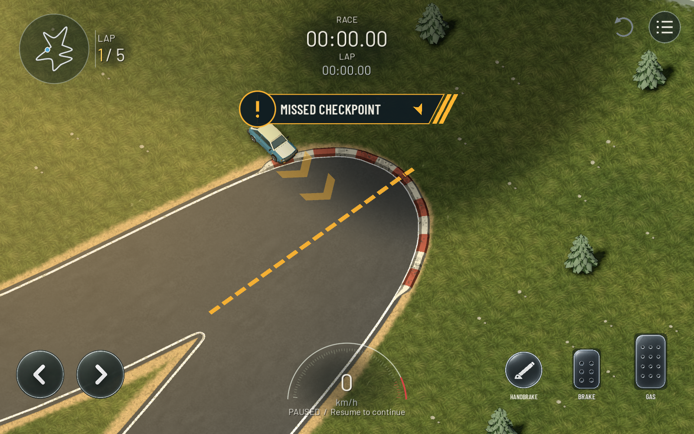
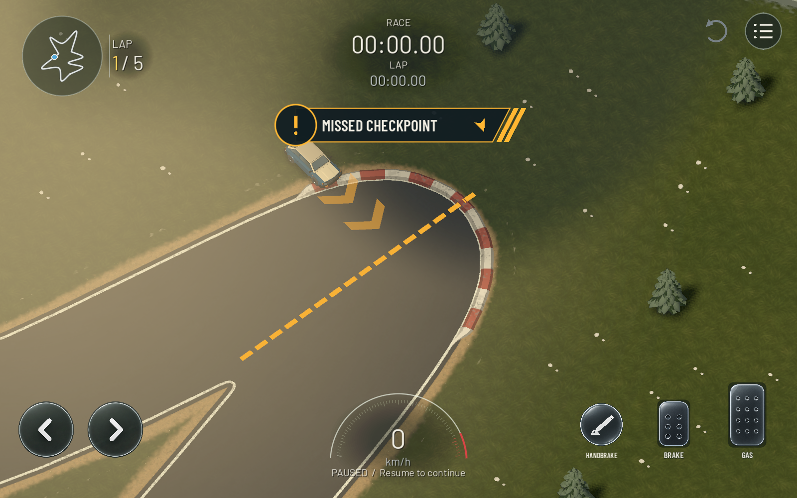
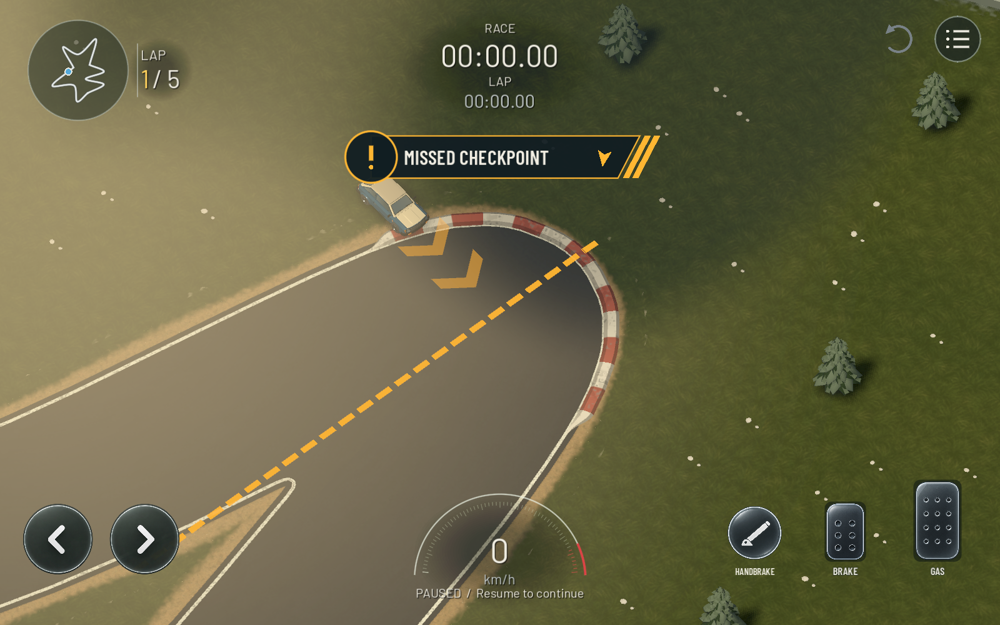

Star: checkpoint covers the road and kerbs
The same physical hairpin: the inside span grows from 12.67 m to 23.50 m. The outer span changes from 6.125 m to 6.20 m. The checkpoint now reaches the inner road boundary. Native game views; original road, camera and vehicle assets.
Compatibility

Before: shortened inner spanAfter: full connected road and kerb spanDesktop Mobile

Before
After